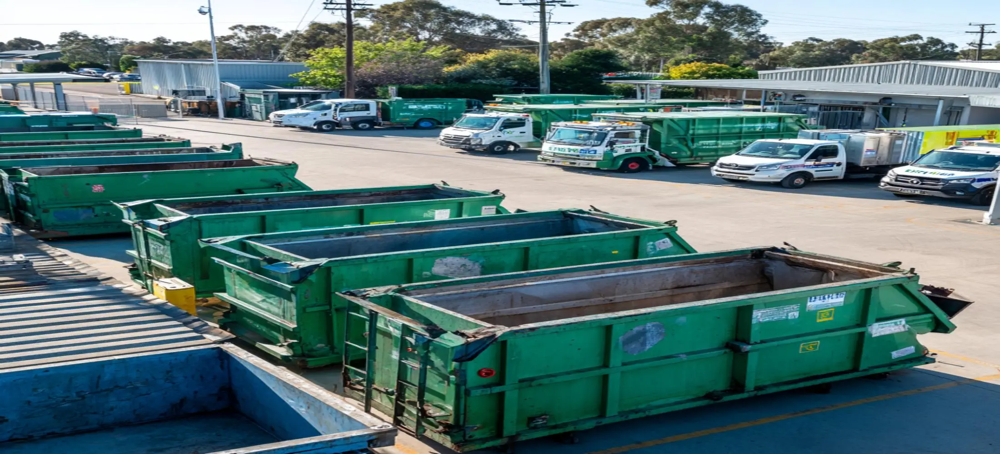

Who We Are
We help customers throughout Bunbury organise affordable skip bin hire solutions for residential, commercial, and construction waste removal projects. Our focus is on providing practical information, suitable skip bin options, and straightforward service that makes waste management easier. Many people searching for cheap skip bins Bunbury are looking for a cost-effective way to manage rubbish without overcomplicating the process. Our role is to help customers identify the most suitable skip bin based on waste volume, waste type, site access, and project requirements. By focusing on practical solutions rather than unnecessary upselling, we help customers find options that fit both their project and budget.
Why Customers Choose Us
Customers searching for cheap skip bin hire Bunbury often compare several providers before making a decision. While pricing is important, many customers also want confidence that the skip bin they choose will actually suit the project. Our approach focuses on helping customers understand available bin sizes, acceptable waste materials, placement requirements, and project suitability before booking. This helps avoid common issues such as hiring a bin that is too small, selecting the wrong waste category, or paying for capacity that is never used. By providing clear information and practical guidance, we help customers make informed decisions while keeping waste disposal costs under control.
Local Experience Across Bunbury
We work with homeowners, landlords, businesses, builders, and property managers across Bunbury on a wide variety of waste removal projects. Over the years, customers have used our cheap skip bins Bunbury service for moving house, garage cleanouts, landscaping work, renovations, rental property clearances, office upgrades, and construction projects. This experience provides valuable insight into the different waste management challenges faced by local customers and allows us to recommend skip bin options that suit both the property and the project. Every project is different, which is why practical guidance remains an important part of the service we provide.
How We Help Customers Save Money
One of the most effective ways to reduce waste disposal costs is to choose the right skip bin from the start. Customers looking for cheap skip bins Bunbury often assume that the lowest advertised price is the best value. In reality, hiring a bin that is too small can result in additional collections, while hiring a bin that is too large may mean paying for unused capacity. We help customers estimate waste volume, understand waste categories, and select a skip bin that matches their actual project requirements. This practical approach helps minimise unnecessary expenses while ensuring sufficient capacity is available for the waste being removed.
Our Approach To Cheap Skip Bin Hire In Bunbury
We believe waste removal should be straightforward, affordable, and practical for every customer. Our approach to cheap skip bin hire Bunbury focuses on helping customers choose a skip bin that matches the actual scope of their project rather than simply selecting the largest option available. Whether you are disposing of household rubbish, green waste, renovation debris, furniture, or construction materials, the goal is to provide a solution that balances capacity, convenience, and value. Many customers searching for cheap skip bins Bunbury are looking for a service that is easy to organise and suited to their budget. By providing clear information and practical guidance, we help make the booking process simpler while ensuring customers have access to the skip bin capacity they need for successful waste management.
Frequently Asked Questions
What makes cheap skip bins Bunbury a cost-effective option?
Cost-effective skip bin hire is not simply about choosing the cheapest advertised price. The overall value depends on selecting the correct skip bin size, matching the bin to the waste type, and avoiding unnecessary collections or additional disposal costs. Customers using cheap skip bins Bunbury services often save money by choosing a bin that accurately matches their project requirements rather than paying for unused capacity or arranging multiple waste removal trips.
How do I know which skip bin size is right for my project?
The most suitable skip bin size depends on the volume of waste being generated, the type of materials involved, and the available space at the property. Household cleanups, garden maintenance, furniture disposal, renovations, and construction projects all produce different waste volumes. If you are unsure, we can help assess your requirements and recommend an option that suits your project. This helps reduce the risk of overfilling, unnecessary expenses, or selecting a bin that is larger than required.
Why do customers choose cheap skip bin hire Bunbury for renovation projects?
Renovation projects often generate significant amounts of waste over a short period of time. Materials such as timber, plasterboard, flooring, packaging, fixtures, and general construction debris can quickly accumulate. Cheap skip bin hire Bunbury services provide a practical way to keep the work area cleaner, improve site safety, and reduce the need for repeated trips to waste facilities. Selecting the correct skip bin from the beginning can also help control project costs while making waste disposal more efficient.
Are cheap skip bins Bunbury suitable for commercial customers?
Yes. Businesses, retail operators, office managers, warehouse facilities, and commercial property owners regularly use cheap skip bins Bunbury services for waste management projects. Commercial customers often require skip bins during office relocations, refurbishments, warehouse cleanouts, shop fit-outs, and ongoing maintenance work. A suitable skip bin helps businesses keep waste organised while maintaining a cleaner and more efficient workplace.
What types of waste can typically be placed in a skip bin?
Skip bins are commonly used for general household rubbish, green waste, furniture, renovation debris, timber, bricks, concrete, and various forms of commercial waste. The materials accepted may vary depending on the waste category and disposal requirements. Understanding the waste type before booking helps ensure the correct skip bin is selected. If you are uncertain about what can be placed in the bin, obtaining advice beforehand can help avoid delays and ensure waste is managed appropriately throughout the project.